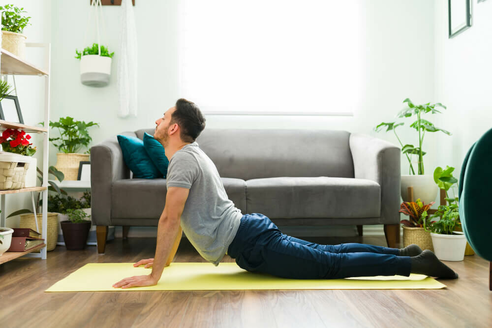

EVDE EKİPMANSIZ SIKILAŞMA EGZERSİZLERİİnsanlar, formda kalmak için farklı ve pahalı aletlere, cihazlara ihtiyaçları olduğunu düşünürler ancak formda kalmak için hiç bir alet ve cihaza ihtiyaç yoktur. Bizim bütün gereksinimlerimizi karşılayabilecek bir makinamız var; o da vücudumuzdur. Son yıllarda insanların kendi vücut ağırlıklarıyla yaptıkları yani kalistenik antrenmanlar çok popüler olmaya başladı. Pandemi nedeniyle kapanan ya da yarı kapasiteli şekilde çalışan spor salonları da, evde egzersiz yapmayı giderek yaygınlaştırdı. Biz de bu yazımızda evde hiç bir alete ihtiyaç duymadan uygulayabileceğiniz bir program hazırladık. Isınma Antrenmana başlamadan önce bir kaç dakika yerinizde koşu yaparak vücudunuzu antrenmana hazır hale getirin. Genel olarak aşırı gergin olan kalça, sırt, arka bacak ve baldır kaslarınıza köpük rolü uygulayın ve her bölgenizi 30 saniye kadar esnetin. En İyi Sıkılaşma Egzersizleri Push Ups with Rotation Nasıl Yapılır: Şınav pozisyonu alın ve şınavın üst noktasında bir kolunuzu havaya kaldırıp baş üstüne doğru yukarı uzatılın. Kollarınız ve gövdeniz bir T oluşturacak şekilde pozisyon almalısınız. Bir tarafla hedef tekrara ulaşınca diğer tarafa geçin. Şınav pozisyonunda kollar bacaklar yere temas halinde ve bükülü olmamalı. Floor Cobra

Nasıl Yapılır: Avuç içleriniz yere bakacak şekilde kollarınızı kalça hizasına uzatarak yüzüstü yere yatın. Göbeğinizi çekin, kalça kaslarınızı sıkın ve kürek kemiklerinizi birbirine yaklaştırın. Kollarınızı düz tutarak göğsünüzü ve ellerinizi aynı anda yerden kaldırın. İki saniye üst noktada bekleyin, ardından yavaşça başlangıç pozisyonuna geri dönün ve hareketi tekrarlayın. Single Leg Bridge Nasıl Yapılır: Sırt üstü uzanın. Dizleriniz bükülü ve ayaklar yere düz olacak şekilde bacaklarınızı kalça genişliğinde açın ve yere uzanıp kalça kaslarınızı sıkın. Bir bacağınızı düz bir şekilde yukarı doğru kaldırın. Yerdeki ayağınızın topuğundan iterek, dizler, kalçalar ve omuzlar doğrudan aynı hizaya gelene kadar kalçanızı yavaşça yerden kaldırın. Bir bacakla hedef tekrara ulaşınca diğer bacağa geçin. Side Lunge to Balance Nasıl Yapılır: Eller belde, ayakta düz bir pozisyonda durun. Bir ayağınızı karnınıza doğru çekin ve uzun bir adım atacakmış gibi yana doğru uzatın. O bacağınızla yere çökerek squat yapın. Diğer bacağınız düz bir pozisyonda kalsın. Çöktüğünüz taraftan kendinizi yukarı doğru iterek başlama pozisyonuna geri dönün ve hareketi tekrarlayın. Bir bacakla hedef tekrarla ulaşınca diğer bacağa geçin |